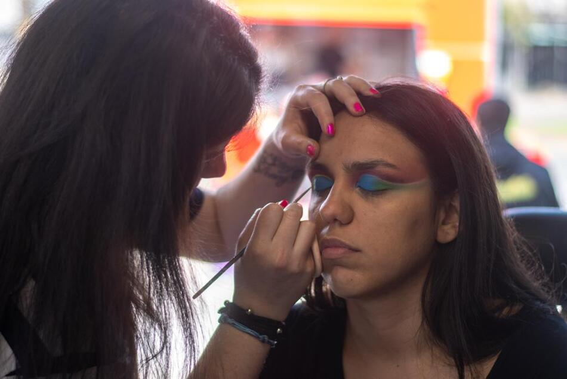

Mi nombre es Verónica Acosta y soy maquilladora social y de artístico desde el 2015. Estudie en una escuela de maquillaje en Montevideo, Uruguay y he ido capacitandome durante todos estos años, siendo sobre todo muy autodidacta lo que me hizo crecer enormemente durante estos años. He participado como maquilladora en desfiles, obras de teatro, película, carnaval, eventos sociales, fiestas y para book de fotos. En mis trabajos podrán ver una gran variedad y la experiencia de años en un área tan diversa como es el arte de maquillar.